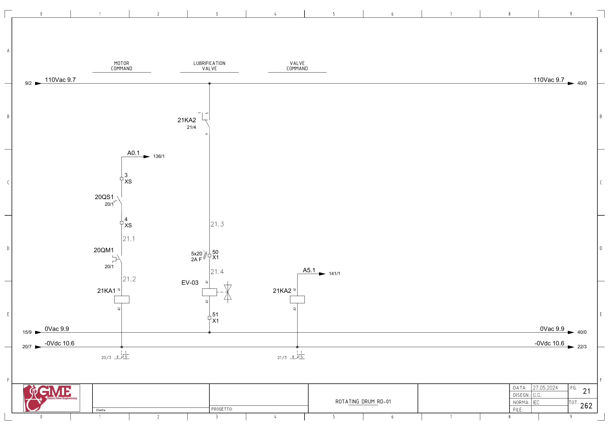

EV03 · 드럼 윤활 솔레노이드 전기 회로 추적
원본 전기도면을 시각 확인한 정적 회로 해석입니다. 현재 배선·입력 극성·파라미터와 현장 측정은 미확인입니다. 전기 작업은 승인된 현장 절차와 자격 범위에서 수행합니다.
1. 도면의 구성과 진단 경계
FG21에 EV-03 윤활 밸브와 21KA2가 표시됩니다. 코일 전원은110Vac9.7/0Vac9.9이며 드럼 모터의24V 명령 회로와 다릅니다.
기존 전체 대장의 FG20은 드럼 전원 회로 참고입니다. 윤활 코일·접점·단자 경로 자체는 FG21에서 확인했습니다. 윤활 밸브의 실제 유량·압력·동작 정상 기준은 미확인입니다.
추가 시공도면 · 접속함·케이블·배관 경로 — 승인·현재 설치는 확인 전입니다.
2. 윤활 밸브 명령
A5.1 ↔ 백업 %Q5.1 / ev03 · FG21 · PDF 22
- A5.1 (FG141/1) → 21KA2 코일 → 0Vdc10.6
- 110Vac9.7 → 21KA2 접점1→9
- X1:50 / 2A F(5×20) → EV-03 코일A1→A2
- X1:51 → 0Vac9.9
전달·사용 위치: 원본1938은 EV03 출력과 드럼 윤활 관련 타이머를 포함합니다. 전원·명령과 실제 윤활 상태를 별도로 기록합니다.
진단 판단: Q5.1/릴레이 명령과110V 밸브 구동을 같은 전압의 단일 경로로 설명하지 않습니다. 승인된 점검 절차에서 전원·퓨즈·접점·코일·유체 계통을 대조합니다.
원본 심볼 직접 참조: 1220 / hmi / ORef 24 · 1220 / hmi / ORef 34 · 1938 / motors 1 / ORef 279
위 직접 참조는 복원 원본의 같은 심볼명 위치입니다. 읽기·쓰기 역할, 현재 호출, 현장 사용을 함께 확정한 표는 아닙니다. 원본의 simulation 블록 참조가 있더라도 이번 작업에서 가상 실행·개발·시험은 진행하지 않았습니다.
원본 PLC와 연결
남은 확인과 기록
- 원본1938의 윤활 주기·시간 설정과 현장 윤활 장치 확인
- 전용 압력·유량 응답 또는 수동 확인 절차 식별
- EV03 직접 코일 도면 위치 FG21을 기존 참고FG20과 함께 관리
도면을 함께 확인
FG 21 · 해당 도면 보기

| 기록 항목 | 내용 |
|---|---|
| 현장 식별 | 설비 ID / 반·단자대 / 모터·인버터 명판 / 도면 개정 |
| 신호 구간 | PLC 명령 / 단자 / 직렬 접점 / 릴레이 / DI / 응답 접점 / 입력 / 내부 DB |
| 관찰 결과 | 시각 / 운전 모드 / 기준값의 근거 / 관찰값 / 최초 불일치 구간 |
| 복구 확인 | 원인·조치 / 원인 해제 / Reset / 재요청 / 주변 설비 영향 |